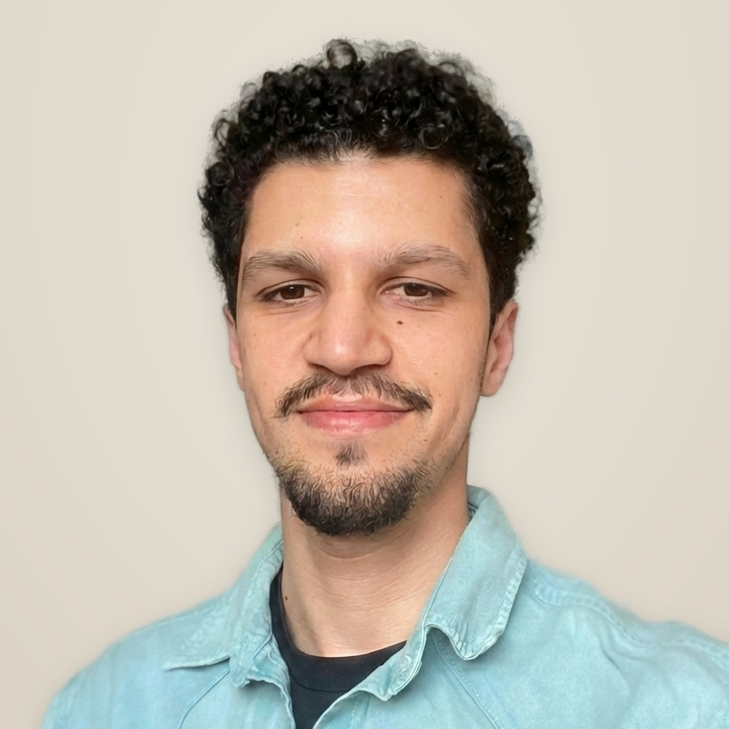
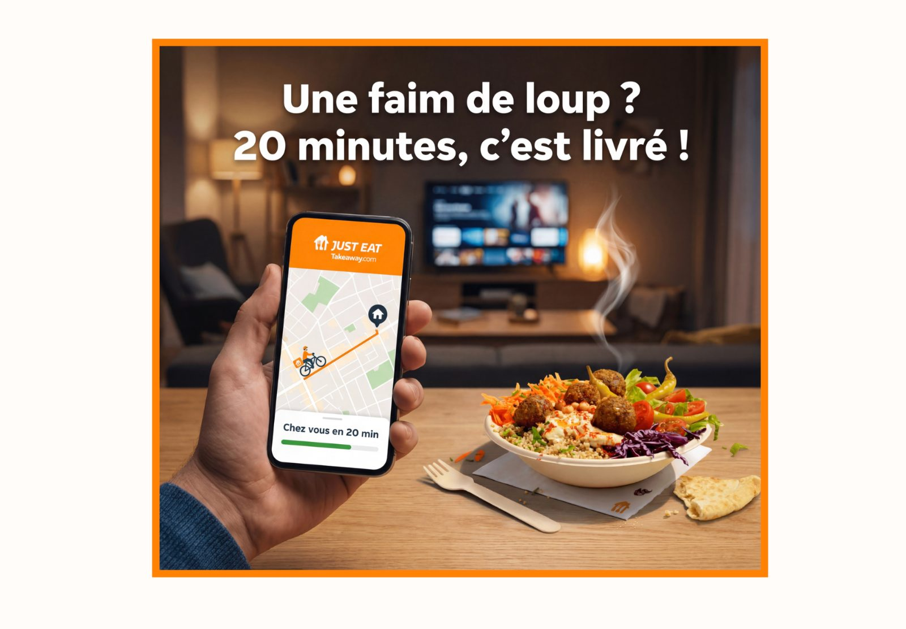
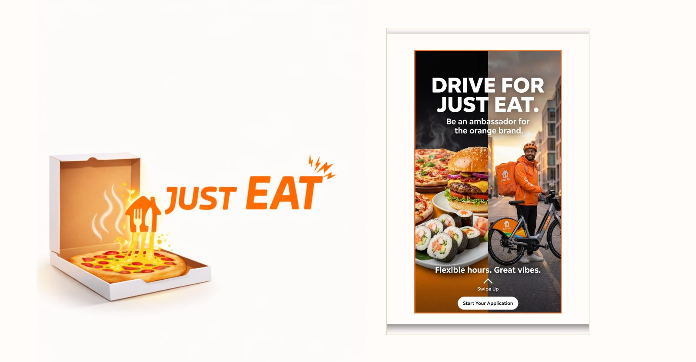
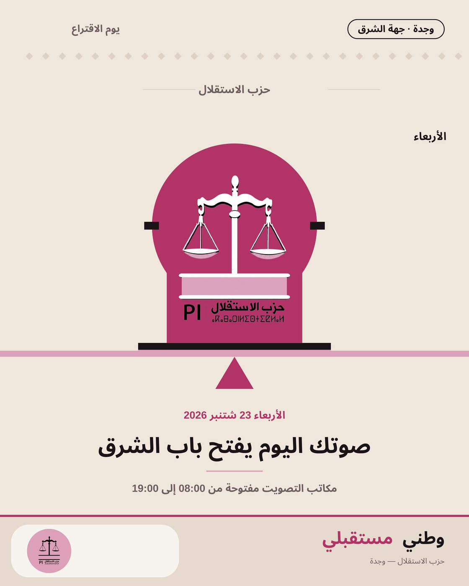
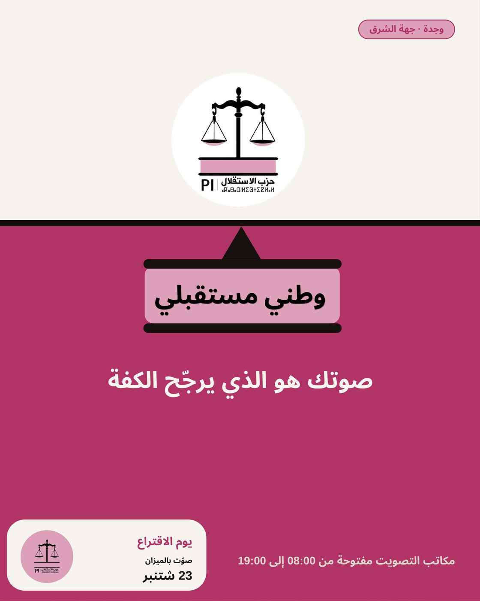
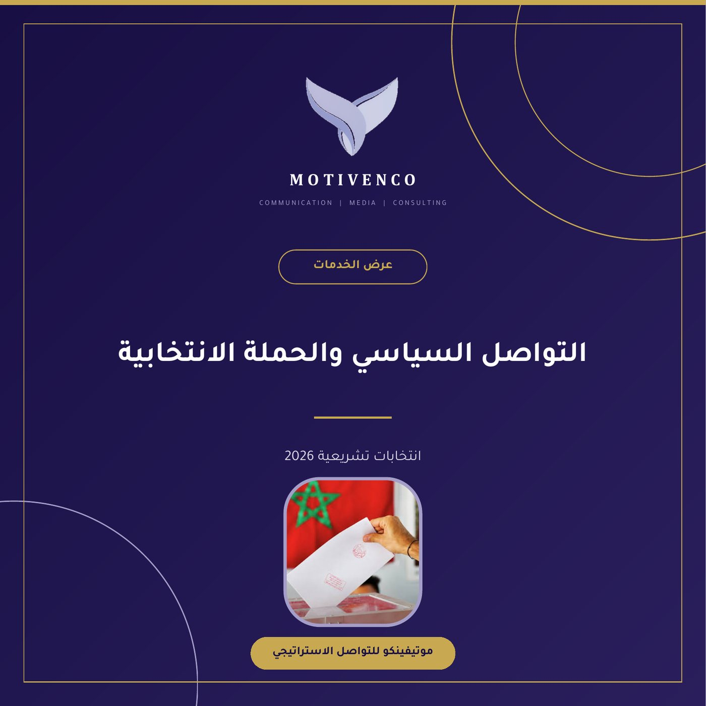

Brand Strategy · CRM & Retention · Institutional Communication
Where political intelligence meets brand strategy.
In French, English and Arabic.

A Brussels-only campaign that repositioned JustEat around speed, using wait-time anxiety as the thing to solve rather than the thing to hide.
Self-initiated strategic exercise based on brand and market analysis. Performance figures are scenario models, not measured campaign results.

Recruiting couriers across Belgium by selling the job as brand ambassadorship instead of delivery work.
Self-initiated strategic exercise based on brand and market analysis. Performance figures are scenario models, not measured campaign results.

A campaign built on one observation about how people order food: craving is immediate, emotional and usually impulsive.
A self-initiated strategy exercise, not client work. I built it on a brand I knew well from the inside, to show how I frame a brief, find the insight and structure an integrated plan. Any figures inside are modelled scenarios based on platform benchmarks, not measured results.
Self-initiated strategic exercise based on brand and market analysis. Performance figures are scenario models, not measured campaign results.
Political communication for a party campaign in the Oriental region, inside Morocco’s new legal framework for digital campaigning.



A focused working toolkit across digital marketing, SEO, content, creative production and project coordination.
Seven years across communication, marketing and digital projects in France, Belgium and Morocco. In house at Just Eat Takeaway.com and Michelin, agency side at Motivenco, and independent since 2024.
I work on two sides. The commercial one covers brand positioning, integrated campaigns, and CRM and retention. That last part is the growth model behind the Takeaway campaign, where repeat orders rose 8 to 12 points because we built loyalty loops instead of buying more acquisition. The institutional side comes from my Master’s in Political Studies (Governance & European Societies) at UCLouvain, where I studied public opinion, policy, and how institutions actually talk.
I work across campaign coordination, content, digital communication and brand projects — from brief and messaging through production, distribution and performance tracking.
Brand & growth strategy
Positioning, integrated campaigns, CRM and retention, paid social, employer branding. For brands and agencies in France and Belgium.
Institutional & political communication
Message architecture, public opinion, stakeholder and advocacy communication. Built on EU governance and public policy at UCLouvain.
Marketing & Communication Consultant
Motivenco and independent clients · Remote
Digital content and communication for Motivenco, a communication agency in Morocco, now on a project basis. Six client accounts in parallel, each with its own editorial calendar, budget and deadlines. Monthly KPI reporting per client, and influence campaigns run from brief through to results. Since January 2026 I also work with independent clients: start-ups, small businesses and individuals. I shoot and edit the photo and video myself.
Communication & Digital Projects Intern
Michelin · Clermont-Ferrand, France
Internal communication for innovation and corporate projects, from planning through production to rollout. Articles, newsletters, presentations, visuals and short videos in French and English. Internal events, workshops and project launches. Intranet and SharePoint content, with engagement and performance tracking. Employer branding through employee portraits. AI tools built into research and content production, with accuracy checks and brand-guideline compliance.
Communication & PR Coordinator
Just Eat Takeaway.com · Brussels, Belgium
Promoted internally in October 2021 from hub operations coordinator. Daily coordination with agencies, media partners and internal teams, checking deliverables against the brief. Corporate trade shows and events, with newsletters, social posts and printed materials to match. Display and e-mail campaigns for Belgium and other European markets, with click-through up 15 to 20 percent. French and English adaptation of head-office web pages and banners, kept inside the brand tone and guidelines.
Hub Operations Coordinator
Just Eat Takeaway.com · Brussels, Belgium
Internal communication with couriers at the Brussels site. Trained around 300 couriers and ran the monthly review meetings.
Communication Assistant
Distradiv · Morocco
Social media, promotional materials and community management. Organic engagement up 8 percent.
Three that carry weight, plus continuing professional development.
Open to full-time roles (CDD or CDI) · France & Belgium · Available immediately